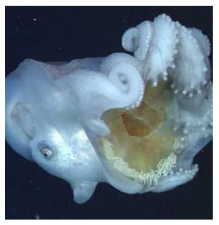
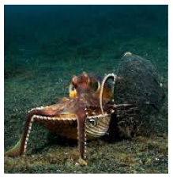

หมึกดัมโบ้
เป็นหมึกทะเลน้ำลึก มีครีบคล้ายหูช้างเหมือน "ดัมโบ้" ตัวการ์ตูน
หมึกสายเลียนแบบ
เป็นหมึกที่สามารถเลียนแบบรูปร่างและพฤติกรรมของสัตว์ทะเลต่าง ๆ เช่น ปลากระเบน

หมึกเจ็ดแขน
เป็นหมึกสายพันธุ์หายาก มีหนวด 7 เส้น (ตัวผู้มีหนวดพิเศษซ่อนอยู่ใช้สืบพันธุ์)
หมึกหอม
เป็นหมึกขนาดเล็กถึงกลาง มีลำตัวโปร่งใส นิยมใช้ทำอาหารในหลายเมนู!

หมึกมะพร้าว
เป็นหมึกขนาดกลาง มีลำตัวหนาและแข็ง พบในทะเลเขตร้อน